Manage Different Types of Attributes¶
The Manage Different Types of Attributes is a feature that allows an administrator to manage and set up attributes in the system.
| Key Term: |
|
| Description: |
|
| Related topics: | |
| Application: |
|
How-to: Manage Different Types of Attributes¶
To do this admin feature, follow the steps below:
- Log in and go to Administration.
- Go to the Data Model tab and then to Properties.
- Select a specific type of attribute from the selection.
- For a particular attribute type, refer to its respective section below:
Type: Text
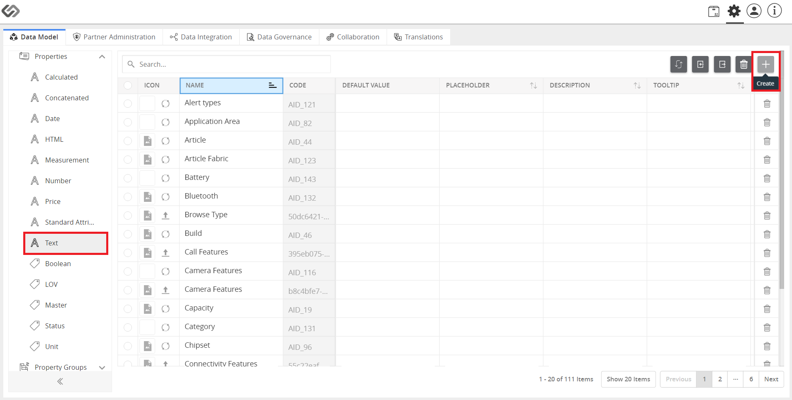
- Click on Text and then click the “+” icon to create an attribute.
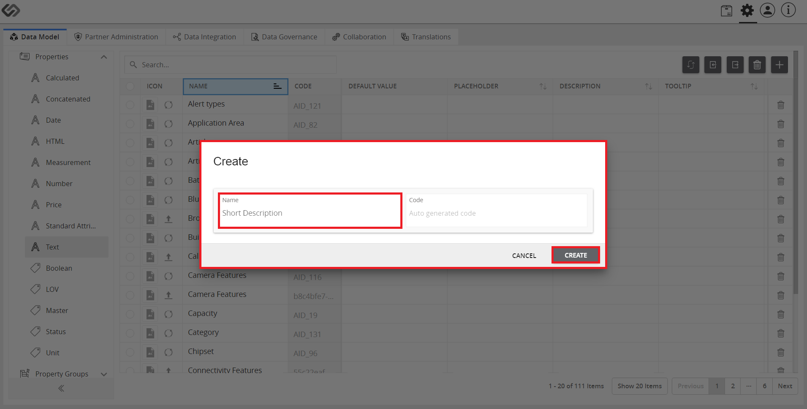
- Enter the attribute name and then click on the Create button.
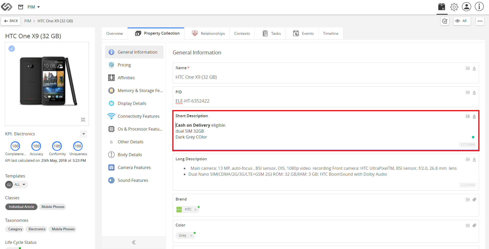
- View the text attribute in runtime.
Type: Number
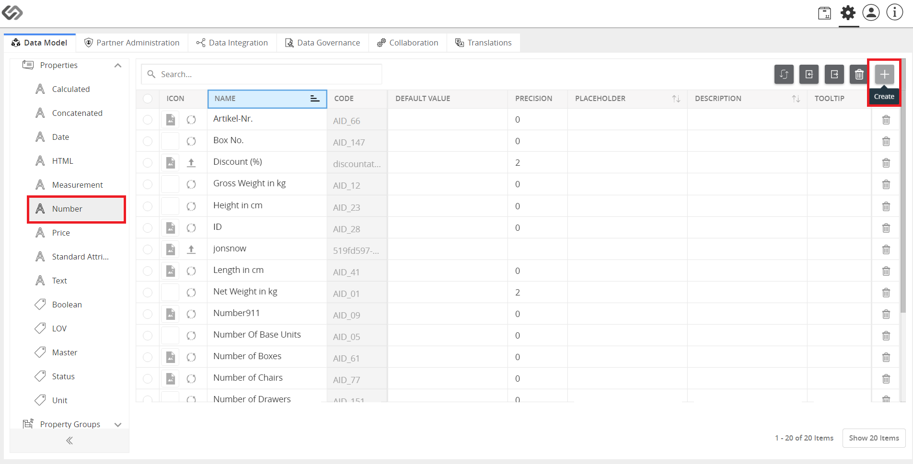
- Click on Number and then click the “+” icon to create an attribute.
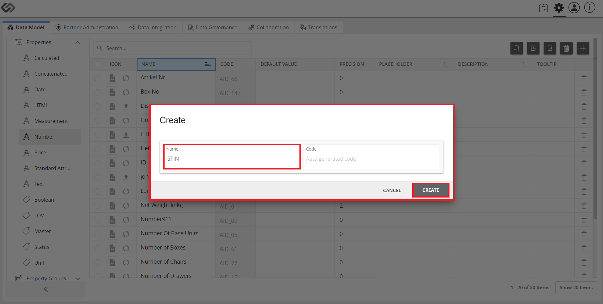
- Enter the attribute name and then click on the Create button.
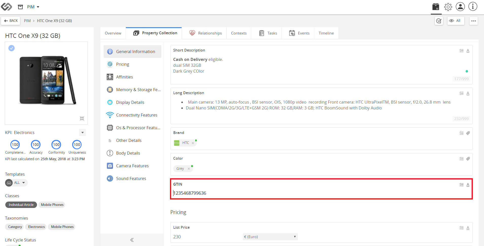
- View the number attribute in runtime.
Type: Price
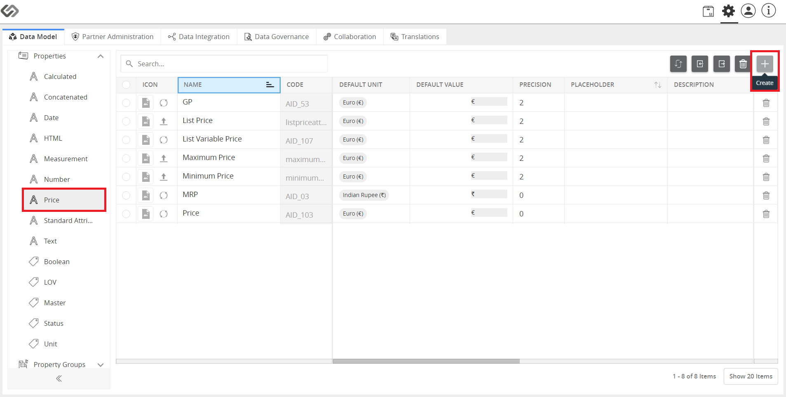
- Click on Price and then click the “+” icon to create an attribute.
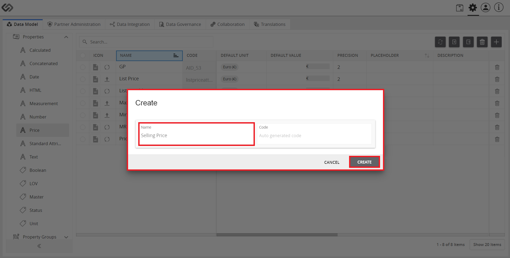
- Enter the attribute name and then click on the Create button.
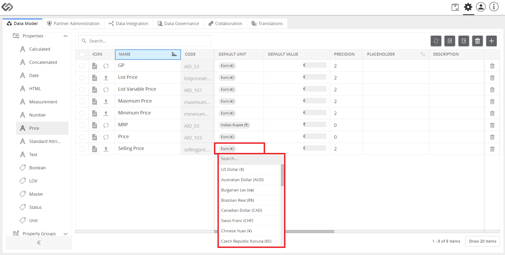
- Set the Default Unit.
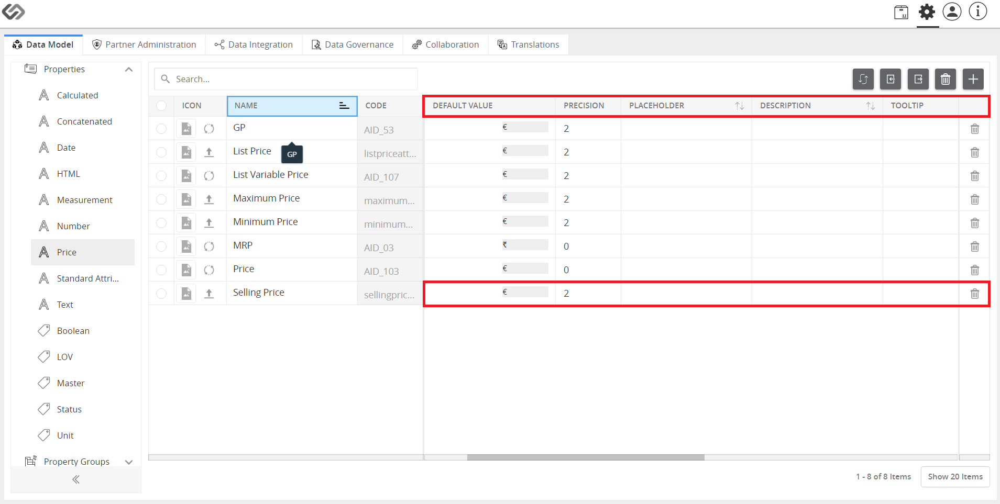
- Provide the Default Value, Precision, Placeholder, Description, and Tooltip and then set the options for the attribute.
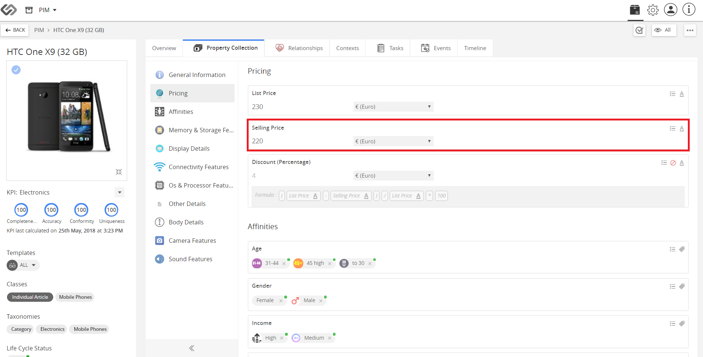
- View the price attribute in runtime.
Type: Date
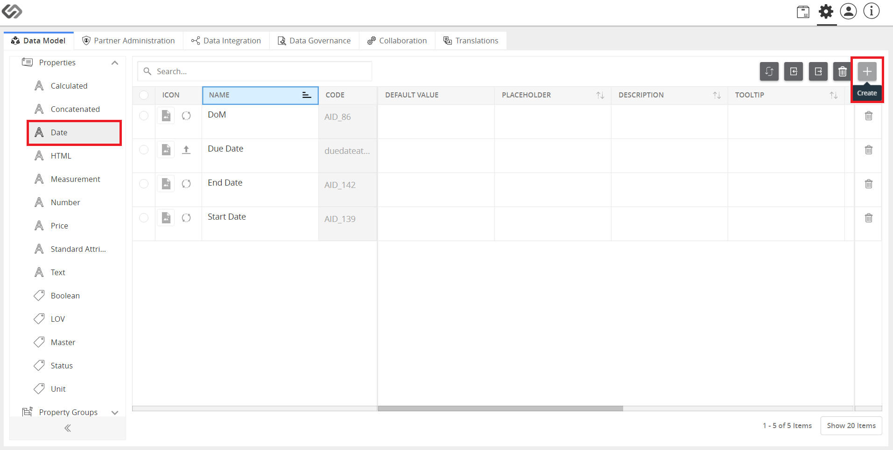
- Click on Date and then click the “+” icon to create an attribute.
- Enter the attribute name and then click on the Create button.
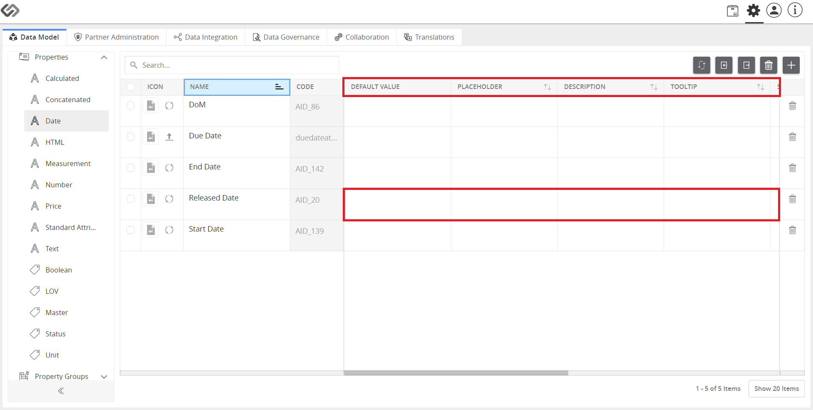
- Set also the values for Default Value, Placeholder, and Description, if available.
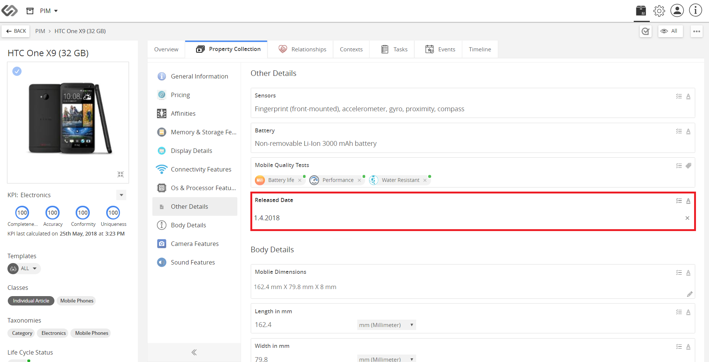
- View the date attribute in runtime.
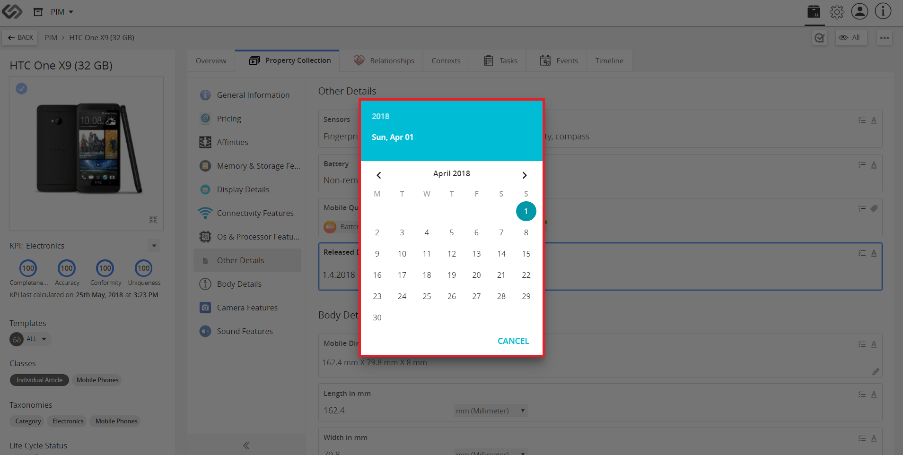